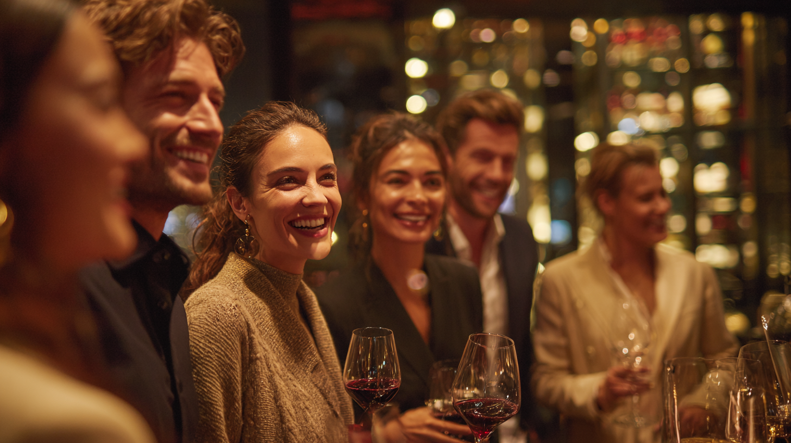

WineTasting
Wine Tasting at Madrid Minds
At Madrid Minds, we spend time discovering carefully selected wines to taste, each one chosen for its character and story. Every tasting is accompanied by delicious tapas so conversation, flavor, and shared curiosity come together naturally.

Thoughtful wines, good tapas, and better conversations.